中文
中文D. E. Williams et al.
Editor’s note
When electrochemists Martin Fleischmann and Stanley Pons claimed to have found evidence of “cold” nuclear fusion happening in a small flask of salty heavy water undergoing electrolysis, conflicting reports of verification or failure quickly came from all over the world. This paper by chemist David Williams and his co-workers in England was one of the first to turn the tide of opinion towards the idea that cold fusion is an illusion. It reports a very comprehensive attempt to replicate the results of Fleischmann and Pons, and finds no evidence of excess heat, neutron emission or the formation of tritium—the last two being diagnostic of deuterium fusion. 中文
Experiments using three different calorimeter designs and high-efficiency neutron and γ-ray detection on a wide range of materials fail to sustain the recent claims of cold fusion made by Fleischmann et al.1 and Jones et al.2. Spurious effects which, undetected, could have led to claims of cold fusion, include noise from neutron counters, cosmic-ray background variations, calibration errors in simple calorimeters and variable electrolytic enrichment of tritium. 中文
RECENT publications1,2 reporting electrochemically induced nuclear fusion, at room temperature, have aroused great interest. The signatures reported are excess heat output, neutron emission and tritium generation from cells with palladium cathodes1, and neutron emission alone at a much lower level from cells with titanium cathodes2. Conventional nuclear physics predicts that fusion between light nuclei requires either very high temperature (as in a tokamak) or unusually close proximity of the two nuclei (as in muon-catalysed fusion). The calculated fusion rate at the internuclear separation in the deuterium molecule (0.74 Å) is ~3×10–64 s–1 (ref. 3), so the rates reported in ref. 2 (~10–23 d-d-pair–1 s–1; d is deuteron) are not easy to understand in the context of the known interstitial-site separations (~3 Å), even more so when it is realized that this rate is a severe underestimate because of incomplete deuterium loading in titanium (see Materials characterization section). The reaction rates reported in ref. 1 are even more difficult to understand4, and the existence, despite strong arguments to the contrary (ref. 5, for example), of an unknown mechanism, which results both in an extraordinary enhancement of the reaction rate and a suppression of the normal nuclear-reaction channels, has been postulated. 中文
In the first reports of the electrolytic cold fusion effect it was stated that the effect is not consistently reproducible, and that it both takes some time to appear and that it may subsequently disappear. Because electrochemical phenomena can be sensitively affected by the state of the surface, some irreproducibility is not, in itself, surprising, and other recent reports (refs 6–8, for example) give well documented accounts of failures as well as successes (R. A. Huggins and A. J. Appleby, Workshop on Cold Fusion, Santa Fe, May 1989) in observing the claimed effects. The clear lack of reproducibility necessitates significant replication, with controls at least equal in number to the number of tests, if positive results are to be viewed with confidence, and exploration of many different, well characterized, material and electrolyte combinations. Particularly, the timescales and achievable concentrations for electrolytic loading of deuterium into palladium and titanium, the quantities of hydrogen “impurity”, and the species detectable by surface analysis of used cathodes ought to be determined. 中文
Calorimetry
We used three types of calorimeter. First, we built calorimeters of size and design similar to those used by Fleischmann et al. (ref. 1 and M. Fleischmann, personal communication) (Fig. 1). We found these to be inaccurate instruments with some very subtle sources of error which it is necessary to appreciate and analyse in detail. We used sixteen such cells, containing different-size cathodes (1-, 2-, 4- or 6-mm Pd rods) and different electrolytes (0.1 M LiOD, 0.1 M LiOH, 0.1 M NaOD or 0.1 M NaOH). Figure 2a, b shows the results obtained for a typical cell. An immediately evident characteristic is the sloping baseline, with the sawtooth pattern a consequence of the regular refilling of the cell. The baseline slope can be quantitatively accounted for by a variation of the calibration constant, k, with the level of liquid in the cell. This is a result of radiative losses through the vacuum jacket9 and conduction of the glass inner wall of the cell10 (see Fig. 2 legend). A consequence of the sloping baseline is that any calibration is only valid for a particular liquid level. We regularly refilled these cells to a reference level at which the calibration had been performed. We calibrated the cells with the heaters before the electrolysis was started and again much later in the run, during the electrolysis, as is evident in Fig. 2a (see Fig. 1 legend for details of the calibration procedure). There was no statistically significant difference between the different calibration sets, so all data were combined. 中文
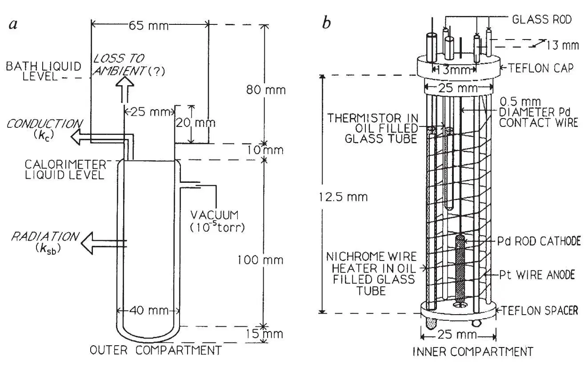
Fig. 1. Schematic diagram of the FPH-type heat-flow calorimeter used here. Heat flow paths are indicated here and discussed further in Fig. 2 legend.
METHODS. As well as the Fleischmann, Pons and Hawkins (FPH) type, we used10 two other calorimeter types—an improved heat-flow calorimeter (IHF) and an isothermal calorimeter. The IHF calorimeters differed from the FPH type in three important ways. First, they were larger: a 500-ml-capacity cylindrical vessel constituted the cell, with anode-cathode spacing ~2 cm. Second, the electrolysis vessel was inserted, using a film of oil for thermal contact, into a tightly fitting aluminium can which was itself packed around with insulating material and placed in a Dewar flask. Whereas the temperature of the cell contents in the FPH calorimeter was determined using a glass-clad thermistor immersed in the cell itself, in the IHF design the temperature of the aluminium can was measured: the can defined an isothermal surface for conduction of heat away from the cell and its use as the temperature measurement surface eliminated the sloping-baseline problem of the FPH design. Third, the space within the Dewar flask above the electrolysis vessel was filled with a polystyrene cap extending well above the Dewar flask, with the aim of significantly reducing unquantified heat losses to the atmosphere. The two types of heat-flow calorimeter were operated in water baths held at a constant temperature of 20℃(±0.08℃). The tops of the water baths were covered with a polystyrene lid. In both cases the cells comprised a spirally wound Pt wire anode (0.25 mm) and a central Pd cathode (Johnson Matthey). For the FPH cells we prepared the different electrolytes using either conductivity water (H2O cells) or slightly tritiated D2O (specific activity 13 kBq ml–1) of isotopic purity initially >99.9%. We used 0.1M LiOD (D2O from Aldrich, measured >99.9% initial isotopic purity) as the electrolyte in the IHF calorimeters. The Pt and Pd contact wire was shrouded in glass tubing in the IHF cells to prevent any possible catalytic recombination of the electrolysis products. In later experiments with the FPH cells we also used screened electrode contacts, but this had no effect on the results obtained. The IHF cells contained a Pd wire electrode insulated to the very tip, which was positioned about three-quarters of the way up the cell. This was used to define the internal liquid level during filling, or refilling, of the cell. The larger volume of electrolyte in the IHF cells (300 ml) meant that refilling was required only occasionally, but the large thermal mass meant that the response was slow (time constant ~12 h): thus they were not sensitive to small bursts of heat. We calibrated the heat-flow calorimeters using a nichrome wire heater placed in an oil-filled glass tube which was in contact with the cell contents. The calibration procedure involved operating the heater, either without electrolytic current, or with a current significantly less (0.2–0.4 times) than the normal electrolysis current, until a steady-state temperature was attained. With the FPH cells, use of a lower electrolysis current ensured continued stirring while diminishing the errors arising from the baseline drift; before each individual calibration the cells were refilled. An empirical calibration curve was thus obtained by fitting the observed thermistor resistance, R, to a range of applied powers, P, using the equation P = a–b(log R)+c(log R)2, where a, b and c are the fitted parameters. The standard error of estimate on the fitted curve varied from 10 to as much as 70 mW with the FPH cells, largely reflecting the error in extrapolation to the reference level. Neutron counting was performed in conjunction with the operation of the FPH cells, using two independent banks of counters mounted above the cells, on top of the water-bath cover10. Detection sensitivity above background was 3 event s–1 in the cell. We never observed a signal above background. The isothermal calorimeter (J. A. Mason, R. W. Wilde, J. C. Vickery, B. W. Hooton and G. M. Wells, Proc. 29th A. Meet. Inst. Nuclear Materials Management, Las Vegas, Nevada, June 1988) comprises three concentric aluminium cylinders each separated by a heat transfer medium with a relatively low thermal conductivity. The cylinder temperatures are maintained by electrical heaters wound as helical coils around each cylinder. Temperature control is achieved by resistance thermometers on each cylinder which are used in conjunction with classical control software and the cylinder heaters. The rate of thermal energy evolution in the measurement chamber (12.5-cm diameter, 26-cm high) is determined by measuring precisely the electrical power supplied to the chamber. We operated the calorimeter at a measurement-chamber temperature of 42±0.001℃. The measurement-chamber power resolution is <5 mW for an operating power of 20 W. The electrolytic cell contained ~1 L 0.1M LiOD. The cathode was contained in a perforated glass canopy to prevent the evolved gases from mixing inside the measurement chamber. The anode was a Pt foil cylinder 3 cm high and 12 cm in diameter surrounding the cathode. The cell was thermally coupled to the calorimeter measurement chamber by conducting oil. Measurements using Pt cathodes and also using nichrome wire heaters showed that there was a small systematic error in the calorimeter, an apparent power excess that varied linearly with the input power up to 100 mW for an input of 15 W. A linear fit to these measurements (12 points, standard error of estimate 8.8 mW) was therefore used to apply a correction to the apparent excess measured for the Pd cathodes. The measured output power of both the isothermal and IHF cells was corrected for the power loss that is due to evaporation of the electrolyte, assuming that the electrolysis gases were saturated in water vapour as they passed out of the cell (25.0 mW A–1 at 42℃): qv = (pv/p0)(1.5)ΔHvI/(2F) where qv is the power loss, pv denotes the saturation vapour pressure and ΔHv the latent heat of evaporation of the electrolyte, p0 is the atmospheric pressure, F is the Faraday constant and I is the current (assumes ideal gases). 中文
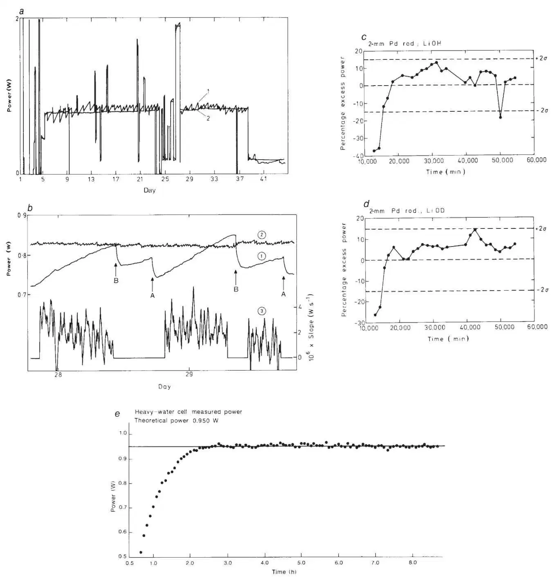
Fig. 2. a, Raw data from FPH-type calorimeter containing a 4-mm Pd rod (1.5 cm long, Johnson Matthey “specpure”, drawn from sintered stock) in LiOH elctrolyte. Line 1 represents the output power calculated from the thermistor reading and line 2 represents the Joule input power to the cell, Pin = I(V – V0) where V0 =ΔHd/2F (1.527 V for D2O and 1.481 V for H2O, ΔHd being the enthalpy of dissociation, for example, D2O(l)→D2(g)+1/2O2(g)). The large step variations are calibrations. b, An expanded region of a, which emphasizes the sloping baseline. Lines 1 and 2 are as in a. Line 3 is the gradient of the apparent output power calculated by differentiation of the data using a seven-point Savitzky–Golay routine23, stepping one point at a time. At points A the calorimeter was topped up to the reference mark with H2O pre-warmed to the cell temperature. At points B a volume of liquid estimated from the electrolysis rate was added. c and d. Results for the c and d, Results for the two most consistently exothermic FPH calorimeters––0.2×3-cm Pd rod in (1) LiOD and (2) LiOH––in the form of percentage excess of apparent output power over the Joule input power. The error bars represent the control limits ±2σ calculated from the results obtained for all the different cells (see text). e, Raw data obtained using the isothermal calorimeter (20×2-mm diameter Pd cathode), immediately following the application of the input power, with the line representing the Joule input power and the dots the observed cell power. The response time of this calorimeter is governed by the time to obtain thermal mixing of the cell contents, and is faster than that of the simple calorimeters, despite the large solution volume.
Sloping baseline. The response of the “simple” FPH calorimeter can be modelled by10
Pin = kΔT= (ksb + kc)ΔT
(3)
where9,
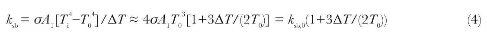
and10
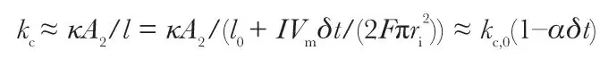
(Pin is the Joule input power, k is the calorimeter constant, ksb and kc are the contributions to the calorimeter constant of radiative losses through the vacuum jacket and conduction up the glass inner wall respectively, σ is the Stefan–Boltzmann constant, A1 is the contact area of the solution with the wall of the cell, T0 is the bath temperature, Ti is the cell temperature, ΔT = Ti–T0,  is the thermal conductivity of the glass, l is the distance from the liquid to the point where the inner glass wall comes into contact with the bath and its initial value is l0, A2 is the cross-sectional area of the inner glass wall, I is the cell current (300 mA), Vm is the molar volume of cell solution, δt is the elapsed time after refilling the cell, ri is the internal radius of the glass vessel and
is the thermal conductivity of the glass, l is the distance from the liquid to the point where the inner glass wall comes into contact with the bath and its initial value is l0, A2 is the cross-sectional area of the inner glass wall, I is the cell current (300 mA), Vm is the molar volume of cell solution, δt is the elapsed time after refilling the cell, ri is the internal radius of the glass vessel and  . We measured the calorimeter constant for the cells to be ~0.1 W K–1, with the calculation using equation (4) indicating roughly equal contributions from ksb and kc. A more complete description of the calorimeter should also take into account the effects of the solution loss on the heat capacity of the calorimeter. It can be shown however that the contribution of this to the sloping baseline is insignificant10. 中文
. We measured the calorimeter constant for the cells to be ~0.1 W K–1, with the calculation using equation (4) indicating roughly equal contributions from ksb and kc. A more complete description of the calorimeter should also take into account the effects of the solution loss on the heat capacity of the calorimeter. It can be shown however that the contribution of this to the sloping baseline is insignificant10. 中文
Fig. 2c shows results for two of the calorimeters at the calibrated liquid level, in the form of percentage excess of apparent output power over the Joule input power. There was apparently an endothermic period at the beginning of the run, whose duration increased with cathode diameter. We speculate that this was due in part to poor stirring of the solution during hydrogen uptake by the cathode which caused a temperature gradient in the cell (gas is not at first evolved at the cathode and the larger diameter cathodes were shorter, to keep a constant surface area). An analogous effect at the start of the electrolysis was reported by Lewis et al.8, who showed that the apparent heating coefficient of a similar cell varied during the first part of a run. Because of this effect, we excluded the first 10,000 minutes of data from each cell when calculating the statistics. Table 1a shows the mean absolute power deviation for each cell and the standard deviation in this value. The standard deviation for all of the H2O cells was not significantly different from that of the D2O cells (F test, 1% level) so that the data from all of the cells can be used to estimate the error: σ = 0.048 W (that is ±5–10%). A more detailed analysis of this error10 showed it to be largely determined by the variability in the liquid level after refilling the cell, but also with a contribution from unquantified variations in the heat loss by conduction up the calorimeter wall to the air above the water bath. Compared with these errors, effects that resulted from temperature gradients inside the cells were minor. The design used here varied from that in ref. 1 in that the glass sleeve that supported the calorimeter and which was in direct contact with the inner wall, provided a large area of thermal contact with the water bath, and thus reduced the effect of the ambient temperature variations. 中文
Table 1. Calorimetry results
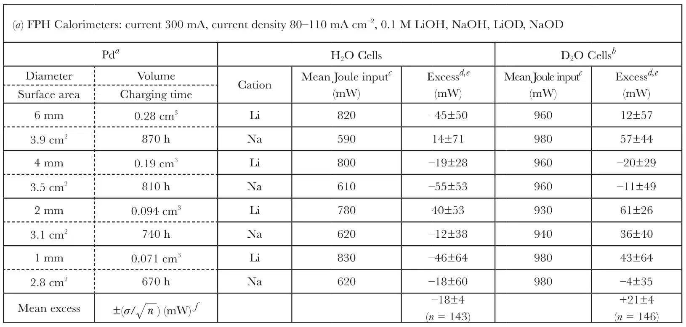
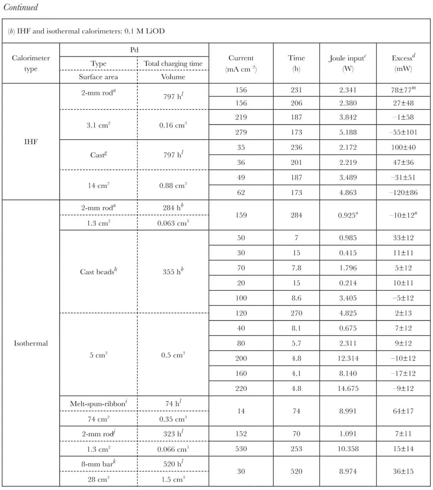
a Johnson Matthey (JM) “Specpure”; drawn from sintered stock prepared from high-purity powder.
b D2O from Harwell reference stock, contains 13 kBq ml–1 tritium.
c Mean Joule input power supplied to cell (see Fig. 2 legend). Values for IHF and isothermal calorimeters have been corrected for heat loss that is due to evaporation (see Fig. 1 legend).
d Excess power = measured cell output power–calculated Joule input power.
e (Mean±1σ) of values calculated after each refilling to the reference level, excluding first 10,000 minutes of polarization (see text).
f Mean and standard deviation of the mean calculated for all H2O data points and all D2O data points.
g Specially produced material supplied by JM—prepared from cast Pd stock that was argon-arc melted into rod form using a gravity casting process. The rods were subsequently sliced and bent to decrease the loading time required (maximum distance from bulk to surface ~1 mm). The sample was cleaned using acetone, 10% HCl and distilled water.
h “Specpure” Pd arc melted three times under argon on a water-cooled copper hearth.
i A variety of ribbons prepared (JM) by melt spinning of cast or sintered Pd. A proportion of the ribbons were heat treated (JM) for 20 min at 100 ℃ under 10% H2/N2. Ribbon thickness, 125μm.
j Type a that was subsequently vacuum degassed at 1,200 ℃, and loaded with deuterium at a pressure of 40 bar. The sample was cooled to liquid-nitrogen temperature before transferring to the calorimeter to minimize loss of D2.
k Sintered high-purity bar, sliced and bent to decrease the loading time required (maximum distance from surface to bulk ~1 mm).
l D2O from Aldrich Chemical Co., contains ~15 kBq ml–1 tritium.
m Mean and standard deviation of all data points after temperature stabilization: data point every 3 min.
n Standard deviation given by  where σb is the standard deviation of the baseline measurement, σy that of the power measurement with the cell running and σc is the standard error of estimate of the correction line (see Fig. 1 legend). σb and σy were typically 6 mW, σc was 8.8 mW.
where σb is the standard deviation of the baseline measurement, σy that of the power measurement with the cell running and σc is the standard error of estimate of the correction line (see Fig. 1 legend). σb and σy were typically 6 mW, σc was 8.8 mW.
o Small error in this particular measurement gave rise to the apparent small endotherm. 中文
As we expected, occasional points from both H2O and D2O cells lay outside the “control limits” of ±2σ (Fig. 2c). No points lay outside ±3σ. No cell showed two or more consecutive points outside ±2σ, and the number of points lying above the control limit in the D2O-cell experiments was no different from that in the H2O-cell experiments. Therefore, we conclude that, within the experimental error, there was no significant anomaly in the behaviour of the D2O cells compared with that of the H2O cells. If, however, the mean power deviation (Table 1a) for all eight of the D2O cells (+9.91±0.47% or 0.021±0.004 W; mean Joule input 0.96 W) is tested against that for all eight of the H2O cells (–2.46±0.72% or –0.018±0.004 W, mean Joule input 0.81 W for LiOH cells and 0.61 W for NaOH cells), it is clearly highly significant. Because no sequence of individual points lay outside the control limits established above, we suspect that there is another, unknown source of error that scales with the input power. This, of course, could be the postulated “fusion effect”, but the magnitude of the effect is commensurate with the errors. The only reliable way of checking this is to construct calorimeters that are free of major sources of errors, and in particular, do not have a sloping baseline. We therefore also used both isothermal and steady state (heat flow) calorimeters which satisfy this criterion. 中文
We have also analysed in detail the slope of the output curve10 to look for momentary power pulses on timescales shorter than the interval between calibrated points. If the Joule input remains constant then this slope should not vary. Any sudden or momentary extra power input, qc, would change the slope by approximately (ksb + kc,0) qc/M0 (M0 is the water equivalent of the calorimeter, other symbols defined in Fig. 2 legend). The number of significant deviations from the mean slope was found to be roughly the same for both the H2O and the D2O cells. For the whole data set, the largest power excursion for a D2O cell (6-mm rod) was ~45 mW and for an H2O cell (6-mm rod) ~40 mW. These are small compared with the input power. It is certainly clear that no unusually large power pulses occurred. Given the difficulties in operating these calorimeters, very occasional occurrences of small fluctuations cannot be considered as support for a “fusion” hypothesis. 中文
The other two types of calorimeters used in this study are described in Fig. 1 legend and results are given in Table 1b. We explored a range of different preparations of palladium and of current density, up to nearly 600 mA cm–2. With the improved heat-flow calorimeters (IHF), the sign and magnitude of the power excess varied with Joule input power, but was always <5%. Expressed in terms of the volume of the palladium cathode, this sets a limit of 100–500 mW cm–3. The most accurate calorimeter used was the isothermal calorimeter (minimum-detectable power change ~10 mW; minimum-detectable energy in any brief burst ~40 J). We analysed these results at four-hour intervals by averaging both the Joule input power and the measured output power over a period of ~20 min. Inspection of the data collected every four minutes between the regions of analysis showed no obvious signs of any short heat “bursts” and we found no trend with time of the measured output power under any of the conditions used. Table 1b shows that we obtained thermal balance to better than 20 mW (24–240 mW cm–3 Pd). We observed slight thermal excesses (30–60 mW) during the initial charging period of the palladium beads, and during runs with high-surface-area cathodes at high current: it can reasonably be assumed that a small amount of recombination (4% at most) was responsible for this effect. 中文
Neutron Counting
We investigated the emission of neutrons from a wide range of cells using three different detector systems (Table 2). The large, high-efficiency detector with which most of the neutron measurements were made is an oil-moderated assembly of 56 10BF3 proportional counters configured as 5 concentric rings11,12. The total efficiency for 2.45-MeV d–d neutrons is 44%. We built an automatic cell shuttle mechanism to exchange regularly two nominally identical cells, only one of which was powered. This enabled the background (which is due mostly to cosmic rays, there being no anti-coincidence counter arrangements) and any signal to be counted virtually simultaneously. In operation the cells were exchanged every 5 min, and the data from the 5 rings were recorded separately. Data from a typical run are shown in Fig. 3 as differences in the count rate between the powered and unpowered cell. Although in the particular example shown, two spikes can be seen in the count rate differences from the detector as a whole, it is clear that these spikes are due entirely to the misbehaviour of ring 4, and are therefore spurious. 中文
Table 2. Measured neutron and γ-ray emission rates for cold fusion electrolytic cells
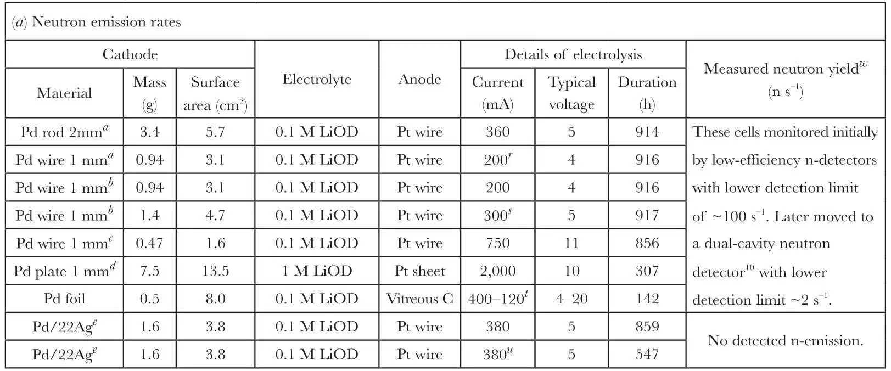
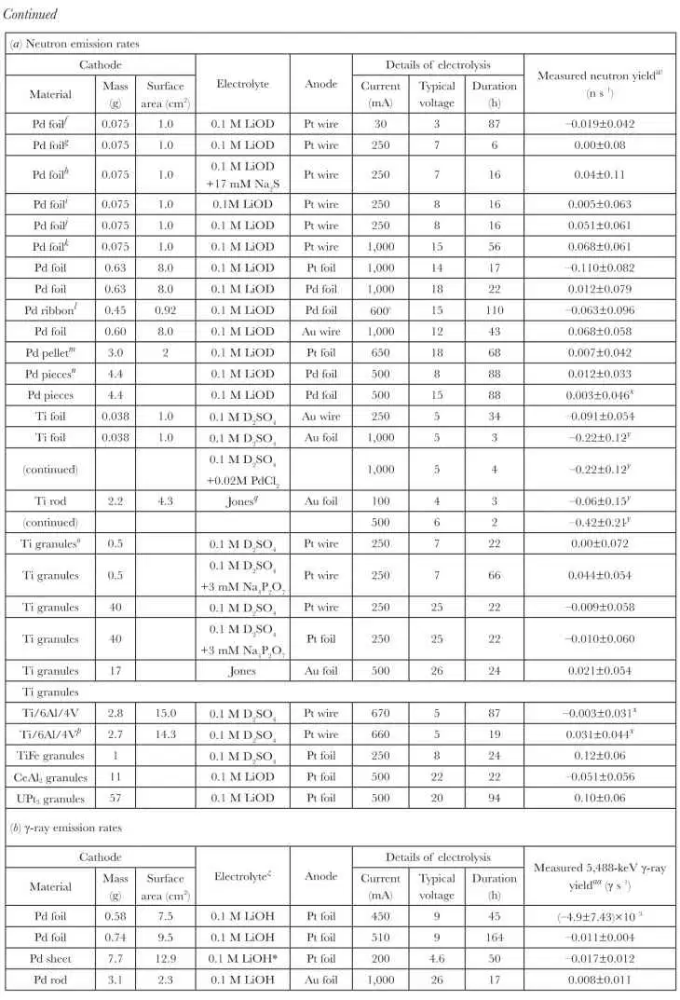
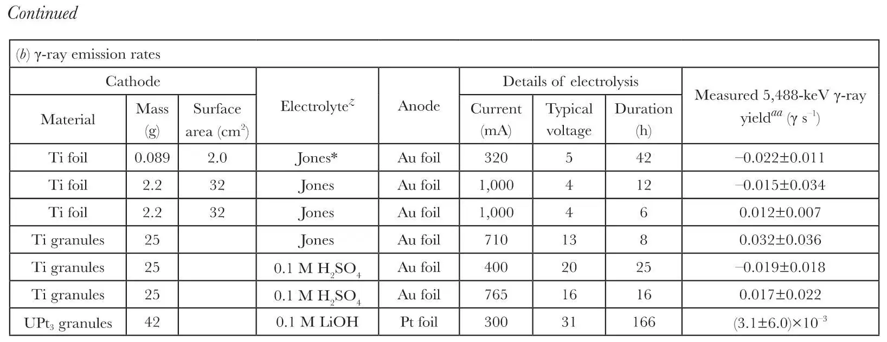
a Cells provided by M. Fleischmann. Cathodes analysed for H, D after use—results H/Pd: 0.01, 0.02 D/Pd: 0.84, 0.72.
b Cathode wound into a tight spiral. Examined initially in the large n-detector, without shuttle, for 147 h with estimated detection limit 1 n s–1 and a further 5 h with detection limit 0.2 n s–1. Surface of cathode then rubbed with S before further use.
c Cathode cleaned with emery paper after 300 h.
d Cathode examined initially in the large n-detector, without shuttle, in 0.1 M LiOD for 183 h; estimated detection limit 1 n s–1. Abraded with 400-grit SiC paper before use.
e Tubes from D storage system for Tokamak.
f Cathode analysed for H, D after use—results: H/Pd: 0.03 D/Pd: 0.80.
g Electrolyte of the above run reused.
h Cathode and electrolyte of the above run reused; Na2S added as concentrated aqueous solution.
i Foil vacuum degassed 1,000 ℃ before use. Analysed for H, D after use—results: H/Pd: 0.02 D/Pd: 0.83.
j Foil dipped in Na2S (concentrated solution) before use. Analysed for H, D after use—results: H/Pd: 0.05 D/Pd: 0.80.
k Cathode cut in half and analysed for H, D after use—results: H/Pd: 0.02, 0.02 D/Pd: 0.85, 0.78.
l Melt-spun ribbon provided by Johnson-Matthey Technology Centre.
m Arc remelted twice; electrolytically charged for 1 month in 0.1 M LiOD then frozen in liquid nitrogen, dipped in concentrated Na2S solution and transferred to n-counting cell.
n Four 1–2-mm-thick discs of different types of Pd (Johnson-Matthey) spot welded to Pd wires plus strained Pd Wire.
o Electrolyte reused after a previous run with a Ti cathode and Pt anode.
p Material heated to 900 ℃ then quenched in water before use.
q AuCN in Jones electrolyte replaced with NaAuCl4.
r Current on for 36 h then changed between 200 mA and 20 mA every hour.
s Current on for 36 h then changed between 300 mA and 30 mA every 5 min.
t Current changed slowly over range shown during electrolysis period as anode disintegrated.
u Current on for 36 h then cycled off for 10 h and on for 2 h for period of 270 h. Then 5,000 s at 380 mA cathodic and 4,000 s at 10 mA anodic for rest of period.
v Current cycled on/off every 2 h. Neutron yield is for “on” cycle.
w The errors assigned (1σ, calculated over full run duration) vary somewhat because in an attempt (mostly in the earlier stages of the programme) to cover as wide a range of cell configurations as possible, pairs of unpowered + unpowered and powered + unpowered runs were not always carried out, and consequently allowance has to made for slight differences in overall cosmic-ray neutron detection efficiencies caused by slight differences between the two nominally identical cells.
x These data were obtained using a different data acquisition system to drive the shuttle and accumulate data, set up to look for neutron bursts10.
y Cells exchanged every 5 min by hand.
z All electrolytes used for γ-ray work were 50∶50 H2O:D2O except * which were 41∶59 H2O:D2O.
aaFor the present measurements, the system was calibrated with a set of standard γ-ray sources and a 238Pu/13C (α, nγ) source emitting 6,129-keV γ-rays. The cells were positioned such that their cathodes were as close as possible to the detector crystal, and the detection efficiencies were calculated by integrating previously measured21 point efficiency functions over the cathode volume. Peaks were searched for at 5,488, 4,977 and 4,466 keV corresponding to the expected location of the full energy, single-escape and double-escape peaks using the method recommended in ref. 22. 中文
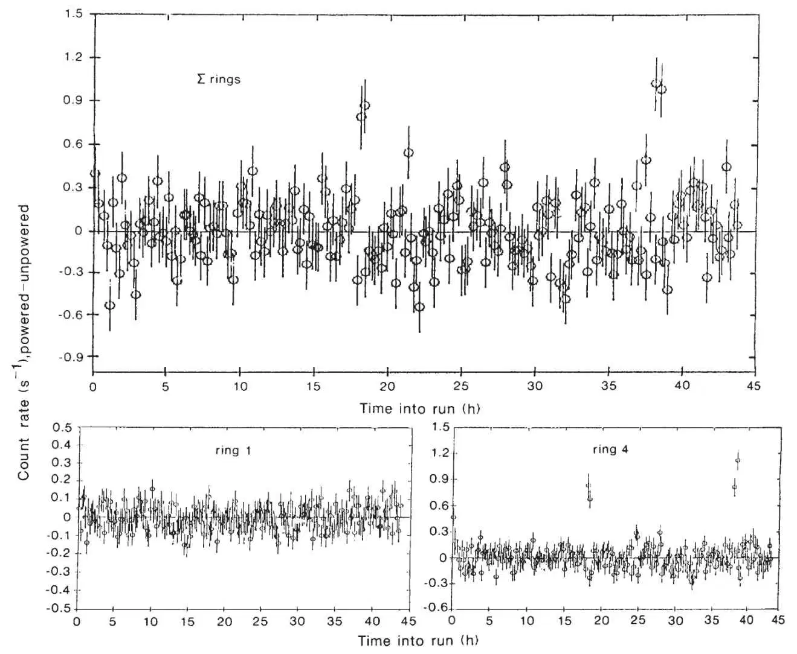
Fig. 3. Data from a typical run on the large high-efficiency neutron detector. These show the differences between count rates for powered and unpowered cells resulting from successive alternate shuttle positions for 40 g of titanium granules in 0.1 M D2SO4. The errors shown are 1σ errors for each five-minute counting period. In addition to results from the detector as a whole, results from two of the five rings of 2-inch diameter 107-cm active length 10BF3 proportional counters are also shown. The counts in rings 2, 3 and 5 (not shown) were very similar to those in ring 1. The apparent bursts were seen only in ring 4 and are therefore a spurious effect. A tube (90-mm inner diameter) passes through the centre of the detector, and the shielding consists of 6 inches of borated resin, 1 mm of cadmium and 2 inches of lead. The neutron detection efficiency is high and is largely independent of neutron energy, varying from 48% for 0.5-MeV (Am/Li) neutrons to 40% for 4.2-MeV (Am/Be) neutrons. The background count rate is 4–5 count s–1, and most neutrons are from cosmic rays. Each of the five rings of counters has its own independent pre-amplifier, pulse-shaping amplifier and discriminator, and the mean energy of neutrons counted can be obtained from the ratio of counts in the outermost ring of counters (ring 5) to counts in the innermost (ring 1). Because neutron counts are distributed over five rings, and because of the 135-μs-mean time to capture, neutrons emitted simultaneously from a source as a burst are counted separately (as seen with the 252Cf source, for example). The pre-amplifiers, high voltage components and insulators are all contained within a desiccated electrically screened box, and we eliminate earth loops and induced electromagnetic pick-up (‘‘aerial’’) effects from external coaxialcable runs to the PDP-11/45 data-acquisition computer by using isolating high-frequency pulse transformers and by winding the coaxial cables many times around ferrite rings. The neutron detector and its immediately associated electronics are located in a temperature-controlled air-conditioned blockhouse with two-foot-thick concrete walls and roof. 中文
The details of the cells and results of the measurements are given in Table 2. The lowest limits (2σ) on neutron emission derivable from Table 2 for palladium are 1.5×10–2 n s–1g–1 or 1.5×10–2 n s–1 cm–2, if the emission were sustained over the whole run. For titanium, the values are 3×10–3 n s–1 g–1 and 4×10–3 n s–1 cm–2, although the latter limit is too high because it does not apply to the runs using granules having a large and indeterminate surface area. If we assume the emission to be sustained over only a one-hour period at most, then the limits are, for palladium: 7×10–2 n s–1 g–1 or 4×10–2 n s–1 cm–2, and for titanium: 8×10–3 n s–1 g–1 or 2×10–2 n s–1 cm–2 (much less in the runs with granules). The neutron-emission rate limits are several orders of magnitude below the rates of ~104 s–1 reported in ref. 1 and about one order of magnitude below the rate of ~0.4 s–1 reported in ref. 2. It is significant that the limits in our work were also obtained for cells in which cold fusion could be expected to be enhanced, in particular by using titanium cathodes in the form of a large (40 g) mass of porous granules to increase both the reaction volume and the surface area, and an electrolyte specifically chosen to promote deuterium loading into the cathode13 (see Fig. 3). As discussed later, we have not expressed the results in terms of the number of deuterium pairs within metal lattices. 中文
Because the net count rates given in Table 2 are differences between much larger background rates, runs were undertaken with a calibrated 252Cf source (0.024±0.003 fissions s–1) emitting 0.09±0.01 n s–1 and a physically identical blank. The result was 0.14±0.05 n s–1, in satisfactory agreement. Furthermore, the expected neutron output of the unpowered UPt3 cell, which is due to spontaneous fission of 238U, was 0.22 s–1. The value measured in comparison with an empty cell was 0.20±0.06 s–1. Our confidence in the results of the shuttle differences seems justified. Measurements on CeAl2 and UPt3 cells were included in the hope that high effective electron masses corresponding to these metal crystal lattices would mimic in some way the fusion enhancement effect of “heavy electrons” such as muons in binding the deuterium nuclei closer together. The palladium ribbon run with the cell power switched on and off every two hours (which was about eight times the characteristic diffusion time in the ribbon) was undertaken to enhance the appearance of non-equilibrium effects, and results (negative) are given in Fig. 4. 中文
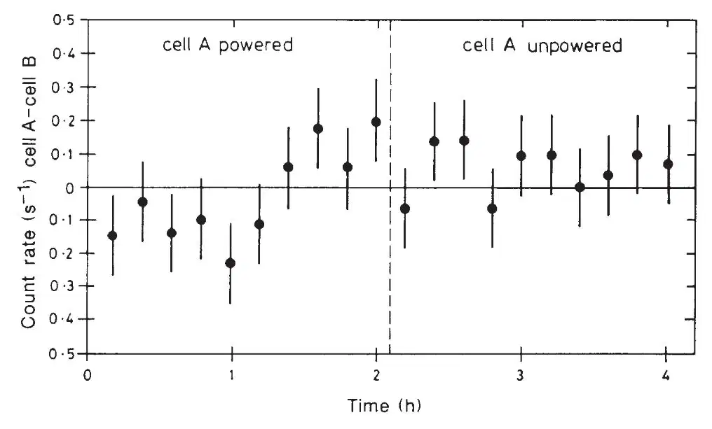
Fig. 4. Time dependence of neutron emission from an electrolytic cell with melt-spun Pd ribbon cathode and Pd foil anode, with power alternately turned on for deuterium loading and off for relaxation every 2 h by the data-acquisition computer: see Table 2 footnote l. The total length of the run was 110 h, and the sums of the “on” and “off” data are shown. After 90 h of running, we added 1μM Pb2+ (to poison the surface by Pb deposition) to the solution. There was no difference between the data in the presence and absence of Pb2+, and so data for the whole run was combined. This run was undertaken to enhance the appearance of the non-equilibrium effects discussed in the text. It is assumed that the ribbon would have had a high density of grain boundaries, dislocations and other lattice defects. Because the “on” and “off” periods were several times the characteristic diffusion time for the ribbon, it is assumed that the composition was cycling in the β-phase region between the fully loaded condition (D/Pd ≈ 0.83) and the limit of the (α + β) phase field (D/Pd ≈ 0.65). 中文
γ-ray Counting
As it has been shown that cold proton-deuteron (p–d) fusion is expected to proceed at rates greater by ~8.5 orders of magnitude than d–d fusion3, we carried out an alternative investigation of electrolytic enhancement of hydrogen-isotope fusion by looking for the D(p, γ)3He 5,488-keV γ-rays from p–d fusion. We used a lead-shielded 113-cm3 n-type high-purity germanium (HPGe) crystal γ-ray spectrometer to search for any γ-rays in the energy range 0.1–7 MeV emitted by a variety of cold-fusion cells operating with a mixture of light and heavy water. The results, also given in Table 2, are consistent with no γ-ray emission. The lowest limits (2σ) on γ-emission derivable from Table 2 are, for palladium, 7×10–3 γ s–1 g–1 or 1×10–3 γ s–1 cm–2, and for titanium 1.4×10–3 γ s–1 g–1 or 4×10–4 γ s–1 cm–2,if we assume that the emission is sustained over the whole run. Jones et al.2 report that the fusion activity may last for only 4–8 h and begin ~1 h after the cell is powered, and in these circumstances typical values for the standard deviation in the γ-ray emission rates are ~0.05 s–1 and the 2σ limits for titanium are 4×10–3 γ s–1 g–1 or 3×10–3 γ s–1 cm–2. Post-run analysis of the hydrogen isotopes taken up by the palladium cathodes with the mixed light and heavy-water electrolytes used gave very satisfactory D:H ratios, lying in the range 1.5–2.5. We note that if the proposed enhancement of the fusion process is as valid for p–d as for d–d fusion then, because of the enhanced tunnelling in the lighter d–p system3, the γ-ray measurements actually provide a much more stringent limit on the cold fusion process than do the neutron measurements. The interpretation of the results from some of these cells was complicated by the dissolution of gold anodes and the consequent gold deposition onto the cathode: this also would have affected the original work2. 中文
Tritium Enrichment
Fleischmann et al.1 claimed a tritium production rate of ~104 atom s–1, commensurate with their reported neutron emission rate. They used a differential technique in which the tritium accumulation in a cell with a palladium cathode was compared with that in a cell with a platinum cathode. They took samples for analysis at regular intervals and maintained a constant total electrolyte volume by the addition of fresh D2O. 中文
Electrolytic enrichment is widely used to increase the concentration of tritium in water before analysis14. Reproducible results require careful control of the electrolysis, as the enrichment factor can vary widely (refs 15, 16 and R. L. Otlet, personal communication): important effects are seen with change of electrode materials, with variation in the condition (activity) of the electrode surface, with the current density (overvoltage) and with the temperature. Without precautions, the variations in enrichment factor can be more than a factor of two16. The claims therefore need to be assessed against this known variable electrolytic enrichment. Surprisingly, Fleischmann et al.1 claimed that there was no electrolytic enrichment in their platinum cell. 中文
If the rates of electrolytic evolution of hydrogen isotopes are written as follows
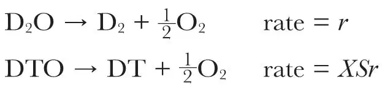
where r denotes the electrolysis rate, S the tritium-deuterium separation factor and X the mole fraction of tritium, T, in the solution, then the tritium accumulation is given by10
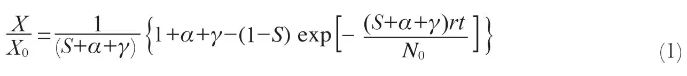
where the total solution volume is maintained constant by the addition of fresh D2O (containing a mole fraction X0 of tritium, directly proportional to the disintegration rate), the ratio of the sampling rate of the solution to the electrolysis rate is α and γ denotes the ratio of the rate of evaporation of the solution to the electrolysis rate—a small correction that may be calculated assuming that the electrolysis gases passing out of the cell are saturated with water vapour. On the timescales of interest, variability in S would give a variable enrichment
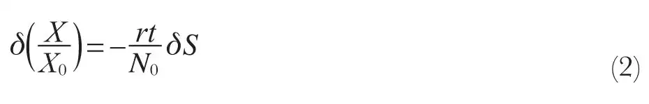
If the solution becomes contaminated by hydrogen absorption from the atmosphere, then if Sobs denotes the apparent DT enrichment factor derived from the application of equation (1), Sobs = S/[0.5(1 + f)], where f = (1–XH)/(1+XH(SHD–1)) with XH denoting the mole fraction of hydrogen and SHD the HD separation factor (relative rate of reaction of HDO and D2O). Therefore, as well as the inherent variability from one electrode to another, it is evident that any variability in the amount of hydrogen pickup will give a variation in the apparent enrichment factor:
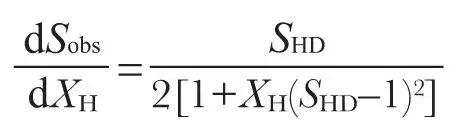
We found that, unless exceptional precautions were taken (and we believe that we used experimental procedures very similar to those used in ref. 1 (M. Fleischmann, personal communication)), values of XH ≈ 0.07 were common. Under these conditions, a change of XH of only 0.01 would give a change in Sobs of 0.02, which could be significant given the smallness of the claimed effect. 中文
Any assessment of whether differential enrichment can be considered to account for the results in ref. 1 depends critically on the value of X0, which was not reported. Using values1 of r (1.24×1018 atom s–1) and N0 (14.6×1023 atom) we calculate from equation (2) that if X0 were at the extreme low end of the range for commercial D2O (3 Bq ml–1), a value of δS = 0.46 would be required; if it were moderate (10–15 Bq ml–1) a value δS ≈ 0.1 would be needed; if it were high (80 Bq ml–1) δS ≈ 0.02 would suffice. 中文
The applicability of equation (1) was confirmed experimentally, on both platinum and palladium cathodes, in conjunction with calorimetric and neutron-counting experiments (see Fig. 5 legend) using D2O with an initial tritium content of 13 kBq ml–1 (efficiency corrected). The fit of this equation to all the experimental data (Fig. 5) gave, for palladium, Sobs = 0.59, and for platinum, Sobs = 0.61. Correction for the uptake of hydrogen, usingSHD = 6 (ref. 16), gave S ≈ 0.48, in agreement with previous work and theoretical expectations (S = 0.46±0.02, (refs 14, 15 and D. S. Rawson and R. L. Otlet, personal communication)). For individual electrodes, Sobs for palladium varied from 0.46 to 0.65 (corrected S from 0.42 to 0.58), whereas Sobs for platinum varied from 0.56 to 0.85 (corrected S from 0.43 to 0.69)—a total range for individual electrodes of δSobs = 0.4, which is enough to account for the results of Fleischmann et al.1. 中文
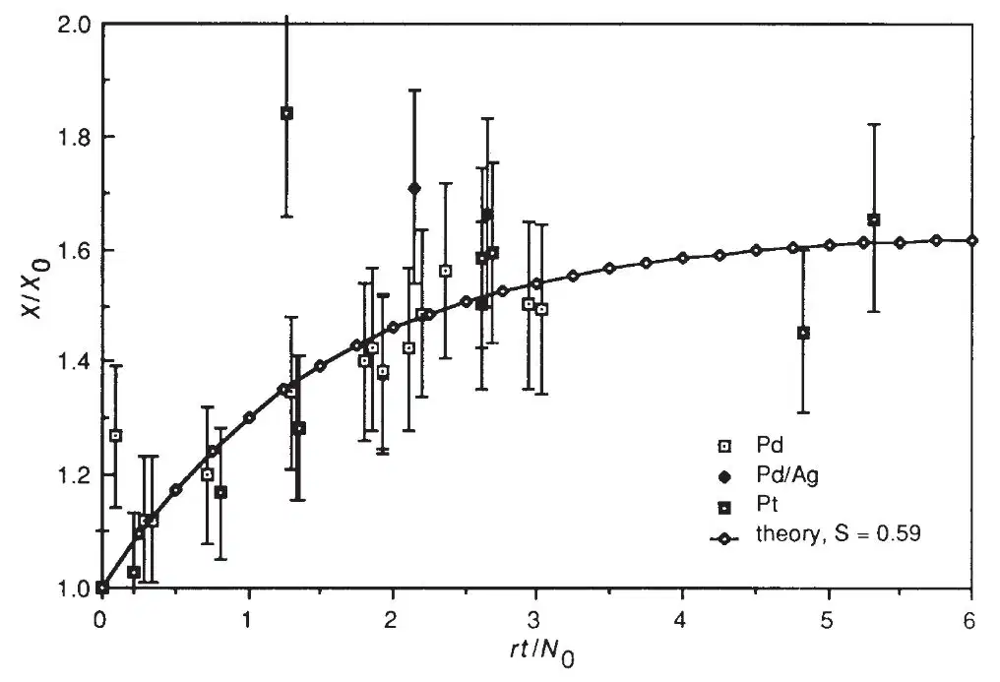
Fig. 5. Tritium enrichment by electrolysis in open cells at constant volume, with both Pd and Pt cathodes: relative count rate X/X0 against amount of electrolysis rt/N0 (symbols defined in the text). Initial count rate (efficiency corrected) was 13.0 ± 0.6 kBq ml–1. Errors are 1σ. The Pd cells were the FPH calorimeters, sampled after 490–660 h, the cells in the first section of Table 2 (footnotes a–e) sampled at the end of the run and one cell from the high-efficiency neutron detector—footnote k in Table 2. The line is the fit to equation (1). 中文
It is clear from these results and discussion that more evidence needs to be presented before the tritium accumulation reported1 can be considered as experimentally reliable evidence for the occurrence of a fusion process. 中文
Materials Characterization
With 125-μm palladium foils, hydrogen loadings (determined10 by hot-extraction mass spectrometry of specimens frozen in liquid nitrogen, and independently by electrochemical extraction) of H/Pd = 0.95 ± 0.05 were achieved in ~1 h at 100 mA cm–2 in 0.1 M LiOH solution with a platinum anode. The limit of deuterium loading in 0.1 M LiOD was lower (0.84±0.03). Rods (1- and 2-mm diameter) polarized for extended periods in neutron counting and calorimetry experiments showed D/Pd = 0.76±0.06. It is well known17 that the equilibrium pressure for a given deuterium loading is higher than that for the same hydrogen loading. Current-interruption methods confirmed that overpotentials in the range 0.8–1 V (ref. 1) were being obtained. From an initial composition >99.9% D2O, the solutions degraded to ~98.5% in 24 h and to 88–98% (analysis by infrared spectrometry) following electrolysis for many weeks. The resulting ratio H/D in the palladium was 0.02–0.04. 中文
During electrolysis, all of the palladium cathodes became covered with a layer that varied in appearance from a dull tarnish to a dense jet black. In the latter case, loose black material was also formed, which in extreme cases came off during electrolysis, resulting in quite heavy erosion of the cathode. The layer itself evidently represented a modification of the morphology of the cathode at the surface. The formation of a thick black layer was enhanced at high current density, at high temperature, on smaller diameter wire and by frequent abrupt alterations of the current density repeated over a long period. The layer was more noticeable on the outside of a spiral-wound cathode than on the inside. The layer was also more noticeable on cathodes polarized in D2O than on those polarized in H2O (perhaps this is related to the greater equilibrium gas pressure for equivalent composition in the Pd–D system), and was different in appearance on materials from different sources. These observations may be explained by the old idea17 that microfissures, or rifts, develop in palladium to release the mechanical strains resulting from the heavy loading of hydrogen, together with the assumption that any such effect would depend on the stress state of the metal surface and its microstructure. 中文
Lithium was present in the surface layer on cathodes used in LiOD, and analysis by secondary-ion mass spectrometry (SIMS) apparently showed a concentration profile extending about 1 μm into the metal. SIMS images showed that the lithium was not uniformly distributed, however, and it seemed likely that it was trapped in microfissures in the surface layer. 中文
Surface analysis showed a number of other species on and in the surface layer, notably small quantities of platinum and traces of copper, zinc, iron, lead and silicon: platinum would have originated from the anode and silicon from the glass container. No doubt the majority of the other contamination would have come from the solution: the levels found (a few atom percent, confined to the surface layers) were consistent with deposition by extended electrolysis from a solution of concentration around 10–9–10–10M. One possible criticism is that low levels of such deposition could poison any essential catalytic activity: we therefore used pre-electrolysis in several experiments, in an attempt to lower the surface contamination. We either made repeat experiments on the same solution, simply changing the cathode, or treated the solution beforehand in a separate cell. 中文
Because of claims that an unusual mechanism might lead to nuclear reactions proceeding predominantly non-radiatively to 4He, four cathodes (Table 2, first four entries) were analysed by vacuum fusion/mass spectrometry. The high vapour pressure of palladium at the melting point caused difficulties, so internal standards were prepared by ion implantation of 1013 and 1015 atoms of 4He into samples cut from the cathodes. Detection limits for 3He and 4He determined in this way were ~8×1010 atoms per sample—(1–10)×1011 atom g–1. We found no 3He or 4He. The expected level, if fusion had been occurring at the rate reported in ref. 1, was ~1016 atom g–1. 中文
Evolution of hydrogen at a titanium cathode resulted, as is well known13, in a dense network of hydride precipitates, observable by standard metallographic methods, penetrating below the surface. In 0.1 M D2SO4 electrolyte at 100 mA cm–2, the network penetrated ~30μm in 1 h. Precious-metal deposition inhibited the electrolytic uptake, presumably by lowering the overvoltage and promoting gas evolution. Electrolysis in the “brew” used by Jones et al.2 resulted in hydride precipitates confined to the grain boundaries; other experiments showed that the presence of PdCl2 in the electrolyte caused this effect, presumably as a consequence of palladium plating on the cathode. It is clear that expressions of the fusion rate that assume that the cathode has composition TiD2 are completely misleading: metallography shows that the number of deuterium pairs is far fewer, hence the claimed fusion rate per deuterium pair is far higher than the figure given, and so the results are even more difficult to reconcile with expectations than had been implied2. 中文
Discussion
The interest in cold fusion has generated a large number of neutron counting experiments. It is well known that, in general, it is inadvisable to measure the signal + background and background of counting measurements at different times and in different physical locations (as in ref. 1), because of unexpected systematic variations. This is especially true for low-count-rate experiments. Compensating for variation of the background rate and assessing appropriate errors for the procedure chosen are particular problems. The work of Jones et al.2 can be criticized for such errors18. It is notable that in ref. 2, only one run in fourteen showed a significant effect and then only because this particular run was assigned a smaller counting error than the others. Here we have attempted to minimize, by the shuttle procedure, uncertainty about background and counter variability and about error calculation. Given some of the more spectacular claims that have been made, we note that further caution is advisable because of the notorious sensitivity of 10BF3 and 3He proportional counters to humidity and of counter-amplifier systems to earth loops. In our work the neutron detectors were segmented, and the relationship between signals from the segments was well known, so spurious effects giving inconsistent signals from the segments could be identified. 中文
Failure to reproduce the effects has been attributed by some to the need for rigorous exclusion of hydrogen and claims have been made that palladium electrodes must be cast and carefully degassed before use, to remove all traces of carbon and hydrogen impurity which might decorate dislocations or other high-energy sites (ref. 19 and R. A. Huggins, Workshop on Cold Fusion, Santa Fe, May 1989): this is however inconsistent with the postulate of a “fusion” origin for the effect because, at low energies, p–d fusion is expected to be significantly faster than d–d fusion3. Furthermore, the original reports1,2 did not mention any special precautions to exclude atmospheric water vapour apart from careful covering of the electrolytic cells. We followed similar procedures, and found that degradation of the heavy water by exchange with atmospheric moisture occurred quite rapidly. Alternatively, it is claimed that it is essential to maintain a high current density for a considerable period (A. J. Appleby, Workshop on Cold Fusion, Santa Fe, May 1989) although it is not completely clear whether these latter claims are in fact reproductions of the effect reported in ref. 1 or are something different. In our neutron counting experiments, fresh dislocations were introduced by plastic deformation, some counting experiments were carried out at current density as high as 1 A cm–2 (Table 2) and in one experiment in the isothermal calorimeter a high current density was maintained for a considerable period (Table 1). Trace deposition of platinum on the cathode, supposedly causing a lowering of the overpotential for deuterium evolution and hence a lowering of the attainable deuterium level in the cathode, has also been suggested as an explanation for irreproducibility (M. Fleischmann, personal communication). We observed no effect when we used palladium anodes in our neutron counting experiments. 中文
Timescales for hydrogen and deuterium loading consistent with the expected diffusion time (x2/D where the diffusion coefficient, D = 10–7 cm2 s–1 and x is the radius or half-thickness of the specimen) were measured10 and nuclear counting and calorimetric experiments were always conducted over periods much longer than this. Furthermore, in the process of electrolytic loading of palladium, there will clearly be a concentration gradient, a moving phase boundary and the outer atomic layers of the metal will be saturated (possibly supersaturated) with deuterium17. It might be expected, therefore, that sufficiently sensitive equipment would detect any fusion process well before the material is completely loaded. Because our neutron detection sensitivity was ~105–106 times greater than that of Fleischmann et al.1, it seems unlikely that any greatly enhanced fusion process associated with the absorption of deuterium into palladium, giving rise to neutron emission, is occurring. We are, of course, aware that it is always possible to construct essentially untestable theories involving hypothetical special conditions of the metal or of its surface. Careful characterization of materials for which positive results are claimed is therefore of great importance. 中文
It has been argued that the neutron branch of the d–d reaction might be completely suppressed in favour of the (t + p) branch and it has been further argued (S. Pons, personal communication) that the tritium produced as a result of a nuclear process inside the electrode need not necessarily exchange with the electrolyte and might not therefore be detected. However, the other product of such a nuclear process, a high-energy proton, should be detectable by its interaction with the lattice, including neutron emission: we estimate, knowing the rate of energy loss of the protons and by comparison with (p, n) reaction cross-sections for neighbouring elements, a yield of ~10–6 neutron per proton, implying a neutron yield in our counting experiments of as much as 104 s–1 if fusion at the rate reported in ref. 1 were to proceed entirely through the (t + p) branch. 中文
In view of the rather large d–d separations in both PdD and TiD2, it might be argued that fusion requires some non-equilibrium state in the lattice—perhaps at the α/β phase boundary in palladium or at the tips of the growing TiD2 needles or at a lattice defect—where the d–d or p–d separation could be greatly reduced. Here we created non-equilibrium situations by pulsing the current but we detected no neutron emission (Fig. 4). 中文
Some explanations of the apparent excess heat production have emphasized recombination processes at catalytic metal surfaces20: apart from occasional explosions, however, which did not result in any detectable neutron emission, we found, by comparison of the volume of water added to maintain the cell volume with the electrolysis charge passed, that this was not a significant effect (in agreement with others9). Recombination in the gas space above the liquid, either on exposed cathode surface or catalysed by colloidal metal particles eroded from the cathode, might however account for some of the observations of bursts of heat recently reported (M. Fleischmann and S. Pons, Electrochemical Society Meeting, Los Angeles, May 1989). In discussing the claims in ref. 1, we prefer to focus on characteristics of the “simple” Fleischman, Pons and Hawkins (FPH) calorimeters, because we have only observed small effects (at the level of the inherent uncertainties), which might mistakenly be claimed as arising from cold fusion, in the one type of calorimeter (FPH type) that has major calibration difficulties. Cells using the same electrode and electrolyte materials operated in calorimeters that did not have these problems exhibited none of these effects. 中文
There are two points regarding the calibration that could have a profound effect on the apparent results obtained with FPH-type calorimeters: the first concerns when the calibration is performed and the second how it is performed. Concerning the first point, it seems from our work and that of Lewis et al.8 that a calibration performed during the first 10,000 min of electrolysis could be seriously in error and lead to an erroneous conclusion that subsequently, rather than being in balance, the cells were exothermic. Concerning the second point, Fleischmann et al.1 describe calibration using the internal-resistance heater, by measurement of Newton’s-law-of-cooling losses. Typically, this procedure might involve the application of power to the heater while electrolysis was occurring, following the temperature-time trace until a steady state was obtained, then switching the heater off and following the cooling curve. This procedure gives an approximation to the differential calorimeter constant, kd = d(ΔP)/d(ΔT) (where P is power and T is temperature) at the operating temperature of the cell and can give rise to errors in two ways. First, because any calibration sequence would require 5–10 h, extrapolation would be required to obtain the correct value at the reference liquid level: an estimated error of 20% or more could result. Furthermore, because the evaporation of the cell contents increases markedly with increasing temperature, the baseline slope would increase with increasing temperature and the effects of this sort of error would become correspondingly more marked: the claimed effects were indeed greatest in the cells run at the highest input power. Second, these calorimeters are nonlinear (equation (3), Fig. 2 legend), with the effect being significant when the temperature gradient is large: they cannot be described by a simple Newton’slaw-of-cooling constant. If a differential calorimeter constant is used to derive the input power, the calculated output would be (from Fig. 2 legend, equation (3))
Papp = kdΔT= (ksb,0 + kc) ΔT+ 3(ksb,0/T0) (ΔT)2
so that, in comparison with the correct output (equation (3))
Papp – P = 3ksb,0(ΔT)2/2T0
If the power applied to the heater is significant compared with the electrolysis power then this error will be even greater. Back calculation from the data given in ref. 1 shows that the claimed effects were largest for Joule input powers on the order of 6 W. For our FPH-type calorimeters, this would have given ΔT ≈ 50–60℃. Therefore, had these cells been calibrated in this way, an apparent heat excess on the order of 0.8–1 W would have been observed. Our method of calibration (see Fig. 1 caption) considerably reduced the effect of these sources of error. The original report1 was clearly preliminary in nature, and it is evident from the above that the claims made therein cannot be assessed in the absence of a detailed description of the experimental procedure used and of the methods used to compensate for the systematic errors inherent in the use of a simple calorimeter. 中文
We feel that our work has served to establish clear bounds for the non-observance of cold fusion in electrolysis cells, under carefully controlled and well understood experimental conditions and using well characterized materials. Further details are given in ref. 10. Claims of observations of cold fusion ought now to meet similar standards of data analysis and materials characterization so that a proper assessment can be made. 中文
(342, 375-384; 1989)
D. E. Williams*, D. J. S. Findlay†, D. H. Craston*, M. R. Sené†, M. Bailey†, S. Croft†, B. W. Hooton‡, C. P. Jones*, A. R. J. Kucernak*, J. A. Mason§ & R. I. Taylor*
* Materials Development Division, † Nuclear Physics and Instrumentation Division and ‡ Nuclear Materials Control Office, Harwell Laboratory, UK Atomic Energy Authority, Didcot, Oxfordshire, OX11 ORA, UK
§ Reactor Centre and Centre for Fusion Studies, Imperial College, Silwood Park, Ascot SL5 7PY, UK
Received 8 August; accepted 16 October 1989.
References:
1. Fleischmann, M., Pons, S. & Hawkins, M. J. electroanal. Chem. 261, 301-308 (1989); erratum 263, 187 (1989).
2. Jones, S. E. et al. Nature 338, 737-740 (1989).
3. Koonin, S. E. & Nauenberg, M. Nature 339, 690-691 (1989).
4. Sun, Z. & Tomanek, D. Phys. Rev. Lett. 63, 59-61 (1989).
5. Leggett, A. J. & Baym, G. Nature 340, 45-46 (1989).
6. Gai, M. et al. Nature 340, 29-34 (1989).
7. Zeigler, J. F. et al. Phys. Rev. Lett. 62, 2929-2932 (1989).
8. Lewis, N. et al. Nature 340, 525-530 (1989).
9. Cunnane, V. J., Scannell, R. A. & Schriffrin, D. J. J. electroanal. Chem. 269, 163-174 (1989).
10. Williams, D. E. et al. Harwell Report AERE R-13606 (HMSO, London, 1989).
11. Edwards, G., Findlay, D. J. S. & Lees, E. W. Ann. Nucl. Energy 9, 127-135 (1989).
12. Lees, E. W., Patrick, B. H. & Bowey, E. M. Nucl. Instrum. Meth. 171, 29-41 (1980).
13. Fouroulis, Z. A. J. electrochem. Soc. 128, 219-221 (1981).
14. Östlund, H. G. & Werner, E. in Tritium in the Physical and Biological Sciences Vol. 1, 95-104 (Int. Atomic Energy Agency, Vienna, 1962).
15. Kaufmann, S. & Libby, W. F. Phys. Rev. 93, 1334-1337 (1954).
16. von Buttlar, H., Vielstich, W. & Barth, H. Ber. Bunsenges phys. Chem. 67, 650-657 (1963).
17. Smith, D. P. Hydrogen in Metals (University of Chicago Press, 1948).
18. Carpenter, J. M. Nature 338, 711 (1989).
19. Gittus, J. & Bockris, J. Nature 339, 105 (1989).
20. Kreysa, G., Marx, G. & Plieth, W. J. electroanal. Chem. 266, 437-441 (1989).
21. Croft, S. Nucl. Instrum. Meth. Phys. Res. A281, 103 (1989).
22. Anicin, I. V. & Yap, C. T. Nucl. Instrum. Meth. Phys. Res. A259, 525-528 (1987).
23. Savitzky, A. & Golay, M. J. E. Anal. Chem. 36, 1627-1639 (1964).
Acknowledgements. We thank Johnson-Matthey (Dr I. McGill and Dr M. Doyle) for assistance and for the loan of special samples of palladium. IMI Titanium (Mr J. R. B. Gilbert) provided titanium and information. We thank the following for assistance: P. Fozard, M. Newan, J. Monahan, R. Morrison, H. Bishop, V. Moore and colleagues, J. Asher, P. W. Swinden, A. M. Leatham, R. A. P. Wiltshire, D. A. Webb, J. O. W. Norris, R. Roberts, R. Crispin, C. Westcott, R. Neat, D. Robinson, H. Watson and G. McCracken. We also thank Dr D. Schriffrin, Dr P. T. Greenland and Dr D. Morrison for discussions and Dr R. Bullough for support. This work was financed by the Underlying Science programme of the UKAEA, and UK department of Energy and the Commission of the European Communities.